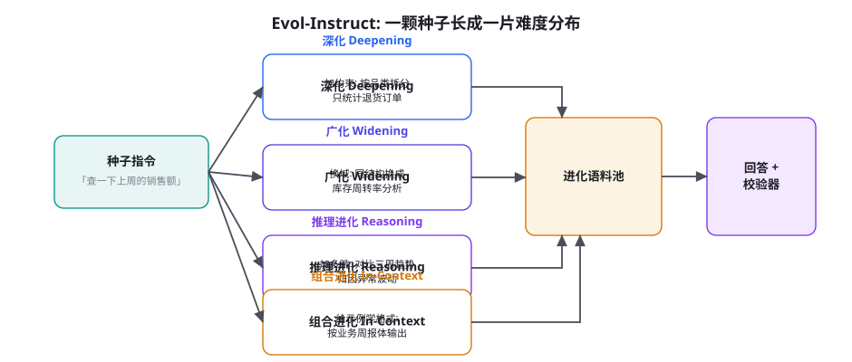
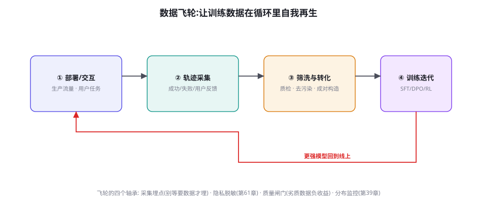

合成数据工程：Self-Instruct、Evol-Instruct 与数据飞轮
前面三章的训练方法（SFT、DPO、RL）都在回答「怎么训」，这一章回答「拿什么训」。2023 年之后的高质量训练数据越来越少地来自人工标注，越来越多地来自「模型生成 + 机器筛选」的合成管线：Self-Instruct 让模型自造指令，Evol-Instruct 让指令进化出难度梯度，验证器让轨迹自证质量，飞轮让数据在部署与训练的循环里自我再生。本章讲合成数据的完整工程：生成、进化、过滤、去污染，以及「合成数据的天花板」这个必须诚实面对的问题。
Self-Instruct：自指令的开端
Self-Instruct（Wang et al. 2022, arXiv:2212.10560）是合成指令数据的开山之作，核心机制朴素到极致：给模型看几条已有的指令示例，让它生成新指令；再用模型自己回答新指令，构成（指令，回答）对。三个保质量的机制值得继承：① 少样本身份切换——生成新指令时，提示里混入「任务分类 + 示例 + 开放槽位」，避免模型只会复读示例的模式；② 去重——新指令与已有指令做 ROUGE-L 相似度过滤（阈值 0.7），相似度高的丢弃——没有去重的自指令会在几百条后开始原地打转；③ 过滤——规则过滤（太短、含占位内容、非指令形态）+ 分类器过滤（是不是一个「可执行的任务」）。它的历史定位：Alpaca 用 5.2 万条 Self-Instruct 数据（成本不到 500 美元）微调 LLaMA，第一次证明「合成指令数据可以把基座的对话能力唤醒」——数据引擎从此从「人工标注」向「模型自产」的范式迁移开始了。
直觉的质疑是「模型生成的数据来自模型自己，能教出比自己更强的模型吗？」——这个质疑在「单模型闭环」下成立（同一模型自产自销，信息不增量），但现代合成管线的关键是打破闭环的三个「外来信息源」：① 强弱不对称——用旗舰模型为小模型生成数据（蒸馏视角，第 48 章），信息从强流向弱；② 环境验证——生成的回答在环境里执行（代码跑测试、工具调用查结果），「真实世界的执行结果」是模型参数之外的全新信息（RLVR 的数据侧对应物）；③ 人工稀疏注入——人不再逐条标注，而是「写种子、定判据、抽检」（人工的角色从「数据工人」升到「数据架构师」）。三者的共同点：合成管线的每一条数据都携带「模型原始分布之外」的信息增量。判断一条合成管线是否值得做，就问一个问题：信息增量从哪来？答不上来的管线，产出的是模型自我信念的回音。
Evol-Instruct：难度进化与覆盖进化

Self-Instruct 的产出分布有一个系统性缺陷：指令难度向中间塌缩——模型自产的指令大多是「中等难度、常见类型」，最难的与最简单的都稀缺。Evol-Instruct（Xu et al. 2023, WizardLM, arXiv:2304.12244）用「进化算子」补上这个缺陷：对每条种子指令，随机施加一种进化操作——深化（加约束、加限定条件）、广化（换主题换域、保持结构）、推理加深（要求多步推导与比较）、组合（把多条指令合并成复合任务）——进化的产物继续作为进化的种子，迭代数轮后，语料池自然形成「从易到难的连续梯度」。配套的 Evol消融（Failsafe 进化失败回退）：进化后模型自己回答不出（或答得太差）的指令被判定「进化过头」，回退一级保留——难度上限由「当前模型能教什么」决定，避免语料池里堆满「谁也不会答」的死题。
| 进化算子 | 操作 | 训练价值 | 风险 |
|---|---|---|---|
| 深化 Deepening | 加约束、加边界条件 | 「听全需求」能力——约束遵循 | 约束堆叠到模型记不住时数据失效 |
| 广化 Widening | 换域换题保结构 | 泛化——同构迁移（第 39 章分布对齐的反向） | 跨域回答质量下降，需强模型作答 |
| 推理 Reasoning | 要求多跳、比较、归因 | 推理深度——RLVR 的任务侧供给 | 验证难，需配答案判据 |
| 组合 Composing | 多指令复合 | 长程与规划——Agent 任务的直接来源 | 复合后可能自相矛盾，需一致性检查 |
数据飞轮：让数据自我再生

Self-Instruct 与 Evol-Instruct 都是「无中生有」的合成；而生产团队最重要的数据来源是「有中生优」的飞轮：你的系统每天处理的任务里，天然埋藏着最高价值的训练数据——它们来自真实分布、自带用户反馈、且随业务共同演化。四段的工程要点：① 采集埋点——轨迹全量落库（含失败，第 45 章的失败炼金术）、用户反馈显式采集（采纳/拒绝/修改——「用户修改了 AI 的草稿」是最昂贵的偏好信号，一定要记录「原稿 + 修改稿」对）；② 筛洗——质量闸门三道：格式完整性、验证器判分（可验证任务）、抽样人工审（每周定频）；隐私脱敏是硬前置（第 61 章），PII 未脱敏的数据绝不进训练池。③ 转化——同一份轨迹按用途分装：成功轨迹进 SFT 池、失败-修正对进 DPO 池（第 41 章）、任务进 RL 池（第 45 章）、用户修改对进偏好池。④ 训练回流——新模型上线后，飞轮自动开始下一轮。飞轮的启动纪律：埋点先行——「等模型好了再采数据」是因果倒置，没有第一轮的真实轨迹，模型永远不会「好起来」。
① 回音室塌缩（model collapse）——合成数据递归训练而不注入外部信息，分布逐代收窄（长尾坍塌、多样性衰减），最终模型「流利地只会说几句」。对策：每代合成语料里混入 ≥30% 的真实/人工数据，并监控语料分布的熵（逐代下降超过 10% 就要警惕）。② 简单占优——合成管线天然高产「模型容易生成且容易验证」的任务（简单题刷量），难题供给不足——与第 45 章的黄金训练区合起来看：你的语料池会自动长成「梯度信号最差」的形状。对策：难度配额制（进化算子的产出按难度档位强制配比）。③ 判据污染——用模型 A 生成、模型 A 判分，A 的系统性偏见被写进判据本身（它生成得「像它」的都判为好）。对策：生成与判分用不同模型（或至少不同提示词、不同温度配置），判据里强制要求「外部证据」（测试通过、引用可回溯）。
一条完整的合成管线：从种子到入库
把前面各节的机制串成一条可运行的管线，并给出每一段的参考配置。管线的骨架是「生成 → 校验 → 入库 → 监控」四站，代码骨架如下：
def synthesis_pipeline(seeds, gen_model, judge_model, env):
pool = []
for round in range(EVOLVE_ROUNDS): # 通常 2~3 轮
for seed in seeds:
op = sample(["deepen", "widen", "reason", "compose"])
new_task = evolve(seed, op, gen_model)
if dedup_score(new_task, pool) > 0.7:
continue # 去重: 原地打转防线
answers = [gen_model.solve(new_task, t=T)
for _ in range(N_ANSWERS)] # 多路作答
verdicts = [env.verify(a) for a in answers]
pass_rate = mean(verdicts)
if pass_rate < 0.1 or pass_rate > 0.95:
if pass_rate < 0.1:
continue # 进化过头: 剪枝
else:
new_task.difficulty = "easy" # 太易: 打标降权
best = answers[argmax(verdicts)]
if judge_model.audit(new_task, best) == "pass":
pool.append(Task(new_task, best,
meta={"op": op,
"gen": gen_model.name,
"round": round}))
seeds = sample(pool, k=len(seeds)) # 进化种子滚雪球
if dist_entropy(pool) < last_entropy * 0.9:
inject_real_data(pool, ratio=0.3) # 回音室防线
return pool三个参数的经验区间：进化轮数 2~3（再多重复率飙升）；每题作答路数 N=4~8（与第 45 章轨迹采样的 G 同一思想——多路才有比较与筛选）；去重阈值 0.65~0.75（按嵌入相似度，需按域校准）。管线的产出必须带数据溯源元数据（生成模型、进化算子、轮次、校验结果）——它不仅是工程卫生，更是后续一切「数据出问题往回查」的唯一线索。
管线的监控面板值得单独一段，因为合成管线是「静默劣化」的高发地——它不会崩溃，只会慢慢变差，没有面板就无从察觉。面板的四个必看指标与各自的预警含义：① 新增去重命中率——连续上升说明生成多样性在衰减（回音室的早期信号，先于熵指标反应），对策是轮换生成器的温度/提示词/模型版本。② 通过率分布的中位数——逐月下移可能意味着难度配额在生效（好事），但伴随「人工抽检通过率」同步下降就是坏事（难度上来了、质量掉了）——两个指标必须同框看。③ 算子分布偏斜——进化算子的使用占比严重偏离设计配比（比如 compose 算子占了 60%），说明某类算子的产出更容易通过闸门——管线在「选择性繁殖」，长期会窄化覆盖。④ 溯源元数据的版本断层——生成模型升级后，新数据的评测表现应与旧版数据对比（同闸门下）——「新版数据更好看」未必是进步，可能是新版生成器更会「讨好」判分器。四个指标每月例会过一遍，合成管线才配得上「运营制」的定位。
去污染：合成语料的评测纪律
合成数据的规模越大，「评测污染」的风险越高——合成任务与评测基准的题目雷同（同源模型、同源灵感），榜单分数虚高而真实能力没变。去污染的三道工序（第 39 章讲过 SFT 数据，这里从合成管线的视角补全）：① n-gram 重叠扫描——与各基准题目做 13-gram 重叠检测，命中的样本剔除或改写（学术基准的标准工序）；② 语义级检测——n-gram 防不住「改写型雷同」，用嵌入相似度做二级扫描（阈值要调，过严会误杀合法题）；③ 出处隔离——最根本的工序：合成管线的种子池与评测集在物理上隔离（不同的存储、不同的访问权限），种子只来自生产流量与人工题库，永远不从「评测基准派生」。第 44 章的「影子域」思想在这里的同构：留一批「管线从未接触过的源」产出的题，其得分与主池得分的差就是污染度的直接度量。
还有一个与团队协作模式相关的话题值得展开：合成管线改变了「数据团队」的岗位结构。传统标注团队的角色（标注员、质检员）在合成管线里收缩，取而代之的是三种新角色：种子架构师——负责种子池的质量与覆盖设计（「种子决定上限」：种子的域分布就是最终语料的域分布，第 39 章分布对齐在源头的规定动作），通常是资深业务专家兼职；判据工程师——负责验证器与 Judge 提示词的设计与维护（本章与第 46/57 章的方法论使用方），是管线上最需要「既懂业务又懂评测」的岗位；数据 SRE——负责管线本身的可靠性（监控面板、熵告警、版本管理、事故回溯）——把数据管线当生产服务运营，这是「数据运营制」的组织落点。三种角色加起来的人力，通常只有传统标注团队的十分之一，但对能力素质的要求高一个量级——数据工程的自动化不是把人换成机器，而是把人换到更高杠杆的位置上。
Agent 轨迹的合成特例
把合成工程落到 Agent 轨迹上，与普通指令数据相比有三个特例需要专门设计：① 轨迹的「反事实筛洗」——成功轨迹不等于好轨迹（第 45 章的侥幸成功问题），筛洗时对成功轨迹做「反事实抽验」：随机删掉轨迹中段的一个动作，让强模型续写——续写成功率高的轨迹说明「该动作非必要」（可能冗余）、删掉后成功率骤降的动作才是「承重墙」。承重墙动作是 SFT 数据的核心价值所在。② 工具结果的保真性——合成轨迹里的工具返回值不能是模型「编造的合理 JSON」，必须来自真实工具或高保真 mock（编造的返回值语法对但分布不对——字段永远是齐的、值永远是规整的，第 44 章的参数分布偏置会从这里渗入）。③ 长轨迹的分段质检——20 步的轨迹人工逐条审太贵，工程解是「分段自动质检 + 抽样人工」：每个工具调用段做 Schema 校验（第 17 章），语义段用 Judge 打分，只把「分段分低 + 全局分高」的矛盾轨迹升级人工审——矛盾恰恰是合成错误的高发位置。
用 50 条种子跑一个迷你 Evol-Instruct，观察「难度塌缩」与「进化失败」两个现象：种子取自你的业务任务（或公开数据集），每条施加两轮进化（深化+推理各一轮），每条进化指令让同一模型作答。然后统计三个数：进化后指令的「回答通过率」分布（对比种子组——你会发现进化组的通过率整体下移，这就是难度上移的直接证据）；「进化过头」的比例（回答通过率 <10% 的指令占比——这部分就是 Failsafe 该回退的）；以及进化组的重复率（两轮进化后多少指令实质雷同——去重的必要性的直接证据）。三个数字会让你对合成管线的参数（进化深度、去重阈值、回退条件）有第一手体感。
数字感量级补充（2025 年经验值，供立项估算）：Self-Instruct 式自指令，7B~72B 生成器，日产 1~5 万条（含过滤后留存 30~50%）；Evol-Instruct 两轮进化，成本约为首代的 2.5~3 倍（指令数指数增长）；Agent 轨迹合成（含环境执行）是最贵的一档——瓶颈在环境吞吐与验证器调用，8 并发环境跑一天产 1~3 千条有效轨迹。把这些数字与第 39 章的 SFT 数据量需求（领域 SFT 通常 5 千~5 万条）对照：合成管线的产出速度足以支撑月度级的数据迭代——数据从「项目制」（攒一年标一年）变成「运营制」（管线常开、月度迭代），是合成工程对团队组织方式的真实改变。
顺手回应一个常被问到的边界问题：「合成数据是否要在这里通过合规审查」——快速给出三件事：许可链（生成数据的模型许可是否允许其产出用于训练——多数开源许可允许但个别条款要读）、PII（与生产数据合流时执行统一脱敏管线，不要对两类数据用两套标准）、可追溯（保留溯源元数据的时限要覆盖模型的生命周期——出了问题要能回答「这条数据是谁在哪轮生成的」）。合规不是管线的对立面，它就是管线的一道闸门——把它做进第 ② 站，而不是训练前的临时检查。
三个高频疑问
Q：合成数据「什么比例」掺进训练最合适？没有普适数字，但有普适的校准方法：把「合成占比」当成一个超参数做消融——固定总训练量，扫描合成占比（如 0/30/50/70/100%），在验证集上画「任务能力 vs 通用能力」双曲线。多数实验报告的规律：合成占比 50% 以下时任务能力单调上升、通用能力几乎不损；超过 70% 后通用能力开始明显回撤（回音室效应显形）。真正的决策变量是合成数据的来源质量（有环境验证的合成 > 纯模型自产）与去重彻底度——这两个变量做对了，占比反而不是最敏感的旋钮。用「来源与去重」换「占比预算」，是用工程努力换训练余量。
Q：用户生产数据与合成数据「打架」（同一任务两种说法）怎么办？优先级规则与合并策略：真实数据永远赢——同一任务的示范，生产轨迹覆盖合成轨迹（真实分布 > 模拟分布，第 39 章第一原则）；如果两者质量相当但风格不同，不要全收（模型在两种风格间摇摆），按「生产轨迹的多数派风格」统一改写合成数据。更工程化的做法是给数据打「来源标签」并在训练配比里分层控制——合成数据用于「广度」（覆盖面）、生产数据用于「深度」（分布贴近），两者的角色本来就不该混同。
Q：小团队没有生产流量，飞轮转不起来怎么办？三步冷启动替代方案：① 借来的分布——公开数据集（如 ToolBench、AgentInstruct、APIGen 类）做首轮 SFT 的地基（第 44 章冷启动配方的开源版），注意去污染与许可协议；② 自建微环境——哪怕只有 20 个任务的小环境（第 45 章五组件的最小版），配合 Evol-Instruct 的算子也能长出几百条带验证的轨迹——小而真，胜过大而假；③ 合成的「先验证后入库」纪律——没有真实流量的校验，合成数据的质量闸门全靠验证器与抽检，此时抽检比例要提到 20%+ 而非 5%。冷启动的本质困难是「没有分布参照物」，所以宁可小而贴近预期场景，也不要大而漂——漂了的语料池，训出来的模型在第 54 章的领域评测里会现原形。
本章在全书网络中的连接：上游是第 39 章（SFT 数据工程——合成管线的落点是它的数据池）、第 44 章（工具轨迹冷启动——本章飞轮的特例）、第 45 章（课程任务生成——Evol 算子的 RL 域形态）、第 46 章（验证器——合成数据的质检闸门）；横向与第 48 章（蒸馏——强弱不对称的合成）共为一门「数据学科」的两半；下游通向第 54 章（评测——去污染的服务对象）、第 61 章（隐私——脱敏是飞轮的硬前置）、第 92 章（In-context 学习——「模型教模型」的理论根源）。复习锚点：一张飞轮图（47-2）、四算子表（47-1）、三陷阱（回音室/简单占优/判据污染）。
与蒸馏的关系再补一句衔接：本章的「强弱不对称」合成，当强模型的角色从「出题人」升级为「完整示范者」时，就进入了第 48 章的领域——轨迹蒸馏：强模型在环境里跑出的成功轨迹，是小模型最贵重的养料；而本章的质检体系（反事实抽验、验证器、溯源元数据）正是蒸馏数据质量控制的原封复用。合成数据与蒸馏共享同一套工程底座，只是「信息增量的方向」一个向「多样性」走、一个向「压缩」走。
最后一段给一个「合成数据的边界」的诚实讨论，回应「合成数据是不是万能的」这个流行错觉。三类任务目前仍高度依赖真实数据：① 偏好与价值观——「什么样的回答更符合我们品牌的语气」没有验证器可判，人工偏好标注不可替代（合成可以「扩量」，不能「定标」）；② 长尾真实现象——真实世界的脏数据、罕见故障、异常组合，合成生成器会「本能地」避开（模型生成的是「典型」，而训练的边际价值恰恰在「非典型」）——这也是为什么飞轮的真实轨迹永远比合成轨迹贵重；③ 安全边界的负例——「什么不能做」的示范（拒答、举报、停手）需要极其谨慎的人工设计，合成的负例可能把「不能做」演绎成「怎么做才不被发现」（安全负例的合成是一个独立而危险的课题，第 58 章）。把这三类标在团队的「数据路线图」上不许合成触碰——知道合成数据的边界，才能把它用满。
关于「种子池从哪来」的实操清单（回应最常见的卡点）：五类合法来源按优先级——① 现有系统的调用日志（哪怕模型还没上线，人工客服的工单、API 网关的调用记录，都是真实任务的富矿）；② 业务文档的结构化抽取（SOP 手册、帮助文档里的「流程步骤」天然是任务描述的模板——「按 SOP 第 3 节构造任务」比凭空想快且准）；③ 客服与销售的 FAQ（真实用户问法 vs 官方表述的差异，是「口语化指令」的天然语料）；④ 竞品/开源场景的移植（公开基准的「任务骨架」+ 你的域填充——注意只借结构不抄内容，兼Licenses 与去污染双合规）；⑤ 专家访谈（每小时访谈可产出 20~40 条「专家直觉里的典型任务」，是种子池里最贵但密度最高的来源）。五类合起来，一个两周的种子冲刺足以攒出 200~500 条种子——足够 Evol-Instruct 第一轮展开。种子的质量门槛只有一条：「描述里包含验收标准」——没有验收标准的任务，后面的验证器无从谈起。
最后把本章的方法放进一个更大的历史视角里收束。训练数据的生产方式经历过三个时代：第一个时代（2020 年前）是「人的时代」——数据靠人工标注，质量可控、成本线性、规模受限于标注产能，InstructGPT 的 1.3 万条示范是这个时代的绝唱；第二个时代（2022-2024）是「模型辅助人的时代」——Self-Instruct/Evol-Instruct 让模型出题、人审人答或模型答人抽检，成本降到十分之一量级，Alpaca、WizardLM 是标志；第三个时代（2024 至今）是「环境验证的时代」——RLVR 思想把「正确性」从人工判断移交给了环境与验证器（代码跑测试、工具查终态、断言判定），数据规模第一次摆脱了「判断力」的瓶颈（判断由机器批量执行），人的角色收缩到「定验证器 + 定种子 + 抽检」。三个时代的迁移逻辑始终如一：瓶颈从「人工产能」到「模型能力」再到「环境与验证器的设计能力」——而本章反复强调的「信息增量」「回音室」「去污染」，正是第三个时代的新质量问题。你的数据战略应该对应地投资：不再囤「标注预算」，而是囤「环境资产」（模拟系统、测试集、沙箱）与「判据资产」（验证器、评测集、领域专家的验收标准）——它们才是新时代的数据护城河。
本章小结
- Self-Instruct：自指令三机制（身份切换/去重/过滤），Alpaca 开启「模型自产数据」范式。
- 合成管线的合法性来自信息增量：强弱不对称、环境验证、人工稀疏注入——答不出「增量从哪来」的管线是回音。
- Evol-Instruct 四算子（深化/广化/推理/组合）修「难度塌缩」，Failsafe 回退防「进化过头」。
- 数据飞轮四段：埋点先行 → 筛洗（质量三闸 + 隐私硬前置）→ 分装转化 → 训练回流。
- 三陷阱：回音室塌缩（掺真实数据 + 监控分布熵）、简单占优（难度配额）、判据污染（生成判分分离）。
- 去污染三工序：n-gram 扫描、语义检测、种子池与评测集物理隔离。
自测题
- 为你的业务设计一条合成管线：明确写出「信息增量从哪来」，以及每条数据的质检闸门。
- 为什么「用户修改了 AI 草稿」是比「用户点了赞」更贵的偏好信号？各写出一个采集陷阱。
- 用「承重墙」概念解释：为什么成功轨迹也要做反事实抽验？设计一个抽样比例策略（考虑预算）。
- 你的合成语料池分布熵连续三代下降——列出三个可能的病因与对应的检测实验。
参考文献与延伸阅读
- Wang, Y. et al. (2022). Self-Instruct: Aligning Language Models with Self-Generated Instructions. arXiv:2212.10560
- Xu, C. et al. (2023). WizardLM: Empowering Large Language Models to Follow Complex Instructions (Evol-Instruct). arXiv:2304.12244
- Taori, R. et al. (2023). Stanford Alpaca: An Instruction-following LLaMA Model. github.com/tatsu-lab/stanford_alpaca
- Shumailov, I. et al. (2024). AI Models Collapse When Trained on Recursively Generated Data. arXiv:2305.17493（回音室塌缩的理论证据）
- Liu, Z. et al. (2024). Benchmark Data Contamination of Large Language Models: A Survey. arXiv:2406.04244
- Zeng, A. et al. (2024). AgentTuning 的 AgentInstruct 数据集. arXiv:2310.12823（第 45 章，Agent 轨迹合成的实例）